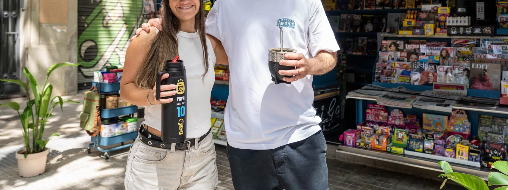

Kiosko Maldonado es un negocio que hace llegar prensa del dia anterior a todos los usuarios. Su filosofia es
clara, no hay nada de malo en vivir en el pasado. Sobre esa base hemos creado esta empresa para llegar a
todos nuestros clientes.
Somos unas empresa pequeña y familiar. Creada en el año 2018 en Rafaela, un pequeño pueblo de la provincia de
Córdoba. Dada nuestra situación,de estar ubicados en medio de la nada, se nos ocurrió esta idea (sí ya te
contesto, estabamos tomandonos unos mates).

¿Por qué comprar el periódico de ayer?
Puedes comprobar en la AEMET si la predicción fue acertada o nos engañaron
Nada de ansiedad. Las noticias ya han pasado
Estatus ecofiendly. Comprar nuestros periódicos te garantiza en convertirte en un héroe del reciclaje
Horóscopo verificado. Es la única forma cientifica de comprobar si dice la verdad
Coartada perfecta para despistados. Si se te olvida algun cumpleaños o algun evento importante, siempre puedes decir que vives en el pasado